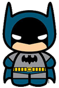

Curriculum vitae de bruce wayne
datos personales
- Nombre completo: Bruce Wayne
- Fecha de nacimiento: 01/05/1939
- Lugar de nacimiento: Gotham City
Formacion academica
1956-1961:Universidad del espantapájaros
- Licenciatura en aeronaútica
1952-1956:Secundario Gotham
- Bachiller con especialización en trucos
Experiencia laboral
1975-1987:Desocupado
- Sin trabajo porquer se me rompió el batimovil
1965-1975:Cazavillanos y demás chusma
- Atrapé a Gatubela a joker a Victor Fries lo dejé porque se me congeló la capa
1962-1965:Aprendiz de superhéroes
- Hice pasantía con Superman. Opté por usar mascara porque no pude aprender a peinarme el rulo